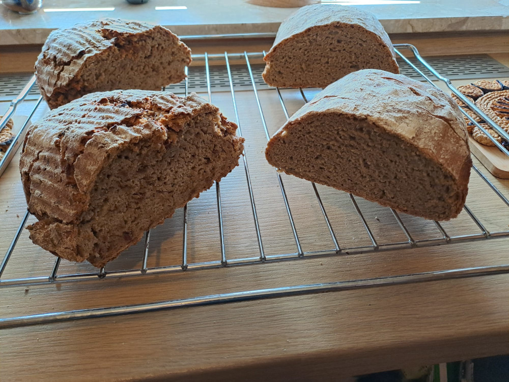

Zwiebelbrot

Zutaten:
- 30g Sauerteig
- 500g Mehl (Roggen und Dinkel)
- 70 - 100g Röstzwiebeln
- 300ml Wasser
Zubereitung:
- Die Zutaten gründlich verkneten
- Den Teig in ein Gärkörbchen geben
- Über Nacht bei Zimmertemperatur gehen lassen
- bei 180 Grad für etwa 50 Minuten Backen (Dampfprogramm)